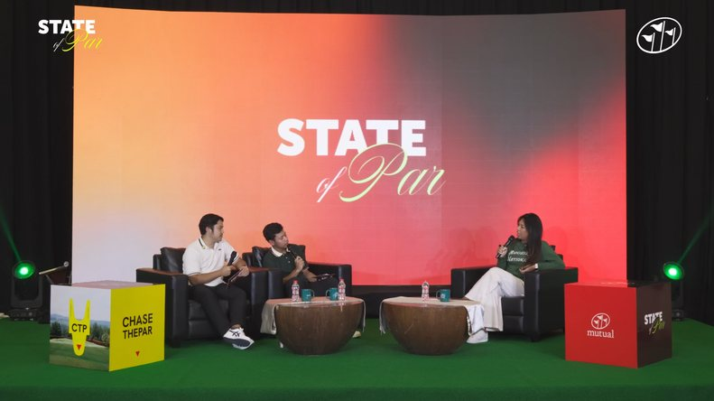
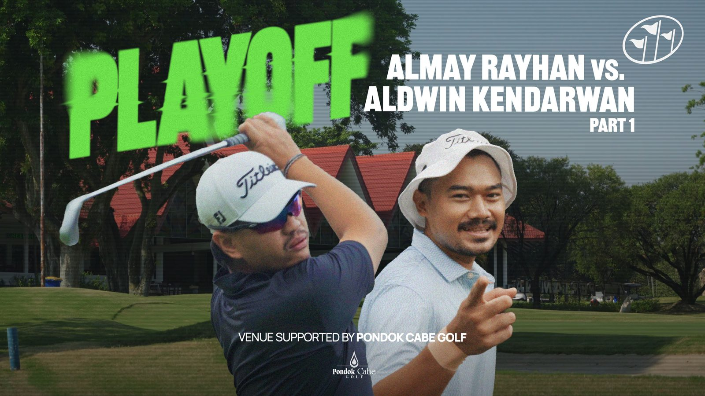
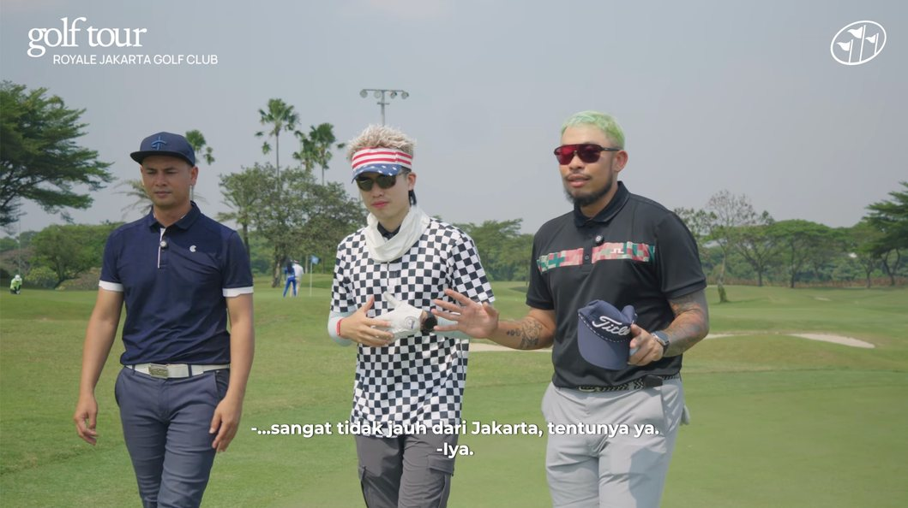
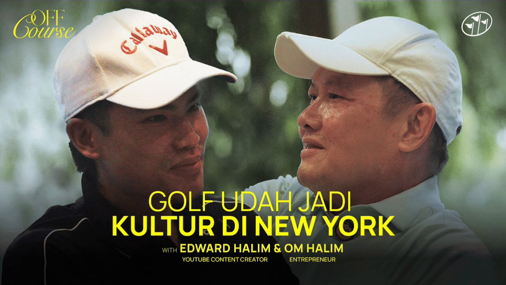
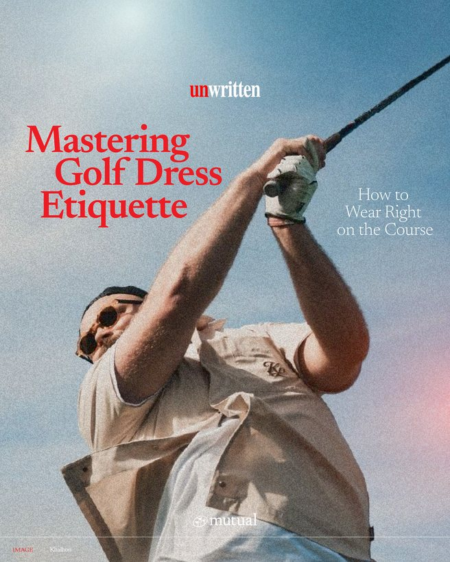
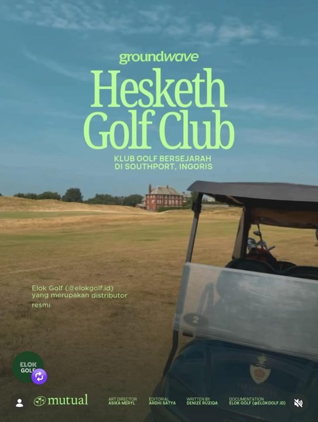

Stories from every side of golf
Video-based programs that show the many sides of golf — diverse, true to the spirit of the game, and open to people outside the golf circle.
YouTube shows

ASMR
A sensory-driven series that shows the beauty of golf through pure, immersive sound — club strikes and natural course ambience, with pro athletes and public figures.

GOLF ASMR EPS. 14: Conquering The Hills With Alit Jiwandana at Sentul Highlands Golf Club

GOLF ASMR EP.11: Reading Every Hole with Minsub Sim at Jababeka Golf & Country Club

Golf ASMR Ep. 10: Andreyo Atmadji Finds Calm on the Fairways of Gunung Geulis Country Club

Fairway Talk
Relaxed conversations on the course with athletes, public figures and golfers — between shots, with nothing scripted.

Fairway Talk EP. 8 (Part 1) With Tanta Ginting & Reza Bima: Berbagai Peran, Satu Ritme Kehidupan

Fairway Talk EP. 7 (Part 2) With Tristan, Ilman & Canti: Di Mana Musik Bertemu Karya Lainnya

Fairway Talk EP. 7 (Part 1) With Tristan, Ilman & Canti: Ketika Lomba Sihir, MALIQ dan Canti Berpadu

State of Par
A casual video podcast where conversations flow, perspectives collide and the game never stops — guests from sports, culture and creative scenes.


Can We Even Swing?
We invite non-golfers to try golf and see what happens. First swings, first reactions, first impressions — and a verdict at the end: Yes or No to Golf?

Convert S2 EP. 1: Beginner Golfer Takes First Coaching Session, Here’s What Happened!

CONVERT EP.6: First Step on the Green… Is Golf About to Win Them Over?

CONVERT EP.5: LAST PREP! Shopping & Short Game Before Hitting the Course

Play Off
A crossover golf challenge where competition meets entertainment: four players in a spirited match, building hype for upcoming tournaments.

PLAYOFF: Professional Golfer Edition: Almay Rayhan & Aldwin Kendarwan (PART 2)

PLAYOFF: Professional Golfer Edition With Aldwin Kendarwan and Almay Rayhan (PART 1)

PLAYOFF: Footballer Edition with Andritany Ardhiyasa, Hanif Sjahbandi, and Muhammad Rayhan Hannan!
Coach Says
Breaks down the most common golf problems and delivers practical, easy-to-apply solutions directly from real coaches.

Coach Says EP. 21 With Almay Rayhan: Driver Jauh, Tapi Tetap Lurus: Apa Rahasianya?

Coach Says EP. 20 With Almay Rayhan: Tee Off Strategy Untuk Memilih Club yang Tepat

Coach Says EP. 19 With Grady Santoso: Kenali Jarak Ideal Iron, Baca Permainan Lebih Baik

Golf Tour
Explores golf spaces — courses, driving ranges, golf cafés and communities — and the places, people and culture that shape modern golf. Hosted by Jonathan Rian and Edward Halim.



Off Course
Stories, perspectives and cultural influences around the game, spotlighting the people and ideas shaping golf outside the course.
Vertical series

Golf 60
A short-form series packed with golf knowledge, fun facts and surprising stories — delivered in under a minute, one clip at a time.

Off Course
Goes beyond the scorecard to uncover the real stories behind every swing — why golfers started, what keeps them hooked and what makes golf unlike any other sport.

Hot Takes
Golfers on the spot with quick this-or-that choices — favourite courses, gear, routines, playlists and traditions.

One Hole With
A community-driven Reel series where golfers share one hole, one moment and one story from their round.

re:store
Revisits new releases with second thoughts and fresh perspectives — how golf equipment, fashion and accessories change in meaning over time.
Feed & editorial

Social Round
Where golf connects people, sparks friendships and builds community — the stories and faces that make the sport inclusive.

Unwritten
Traditions, legends, unspoken rules and the lore of the game.

Groundwave
Serene and picturesque golf destinations — scenic golfscapes mixed with food and lifestyle.

re:store
Revisits releases with fresh perspectives — how golf equipment, fashion and accessories change in meaning over time.